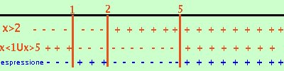

|
Quando invece di un sistema hai un prodotto devi pensare che ogni prodotto e' equivalente a piu' sistemi Ad esempio se hai (x-2)(x2 - 6x + 5) > 0 siccome devi trovare dove il prodotto e' maggiore di zero potrai considerare le soluzioni che vanno bene per i due sistemi
Se invece hai: (x-2)(x2 - 6x + 5) < 0 siccome devi trovare dove il prodotto e' minore di zero potrai considerare le soluzioni che vanno bene per i due sistemi
se hai bisogno di vedere un altro esempio Senza dover risolvere piu' sistemi, pero', e' piu' semplice porre tutte le espressioni componenti maggiori di zero (sia che l'espressione sia maggiore che minore di zero) e poi controllare dove il prodotto di queste espressioni risulta positivo oppure negativo. (Cio' equivale a risolvere contemporaneamente tutti i sistemi) Vediamo come esempio la soluzione delle due disequazioni considerate sopra 1) Prima disequazione (x-2)(x2 - 6x + 5) > 0 Pongo entrambe i fattori maggiori di zero x2 - 6x + 5 > 0
x < 1 U x > 5  Riporto su un grafico, evidenziando con un piu' dove il fattore e' positivo e con un meno dove e' negativo. Nella riga in blu metto il segno dell'espressione prodotto Ora faccio i calcolo dei segni: siccome devo prendere dove l'espressione e' positiva l'espressione prodotto sara' positiva dove entrambe i fattori sono positivi oppure dove sono entrambe negativi Per distinguere questo caso dalla soluzione di un sistema io preferisco indicare i valori positivi con un piu' e quelli negativi con un meno, mentre nel sistema ho indicato con una riga continua le soluzioni accettabili e con una linea tratteggiata quelle non accettabili Pero' stai attento a non confonderti perche' qualche libro di testo indica nello stesso modo (riga continua e tratteggiata) sia la soluzione di un sistema che la soluzione di una disequazione prodotto di espressioni La soluzione e' 1 < x < 2 U x > 5 2) Seconda disequazione se dobbiamo fare (x-2)(x2 - 6x + 5) < 0 ci comportiamo esattamente allo stesso modo fino alla considerazione del risultato finale: Pongo entrambe i fattori maggiori di zero (tanto il segno dell'espressione lo studio alla fine) x2 - 6x + 5 > 0
x < 1 U x > 5 Riporto su un grafico, evidenziando con un piu' dove il fattore e' positivo e con un meno dove e' negativo. Nella riga in blu metto il segno dell'espressione prodotto Considerazione del risultato finale Ora faccio i calcolo dei segni: stavolta devo prendere dove l'espressione e' negativa L'espressione sara' negativa dove il prodotto dei segni dei fattori mi da' un risultato negativo, cioe' dove i due fattori hanno segni contrari La soluzione e' x < 1 U 2 < x < 5 |

|

|

|

|